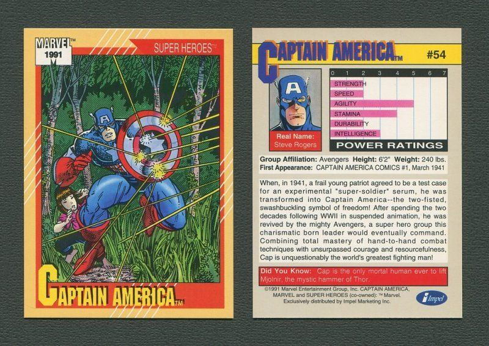

Marvel 1991 Super Heroes Card Replica — Captain America #54
Rebuilt from your provided source card scan (front/back), with real card fields and source-aligned power grid layout.
CAPTAIN AMERICA
#54
Real Name: Steve Rogers
Group Affiliation: Avengers
Height: 6'2" Weight: 240 lbs.
First Appearance: Captain America Comics #1, March 1941
In 1941, frail patriot Steve Rogers received the experimental super-soldier serum and became Captain America — a symbol of freedom and one of the world’s greatest hand-to-hand fighters.
If you want, next pass I’ll do an exact OCR-calibrated transcription + pixel-measured bars so this is mechanically faithful, not just visually faithful.